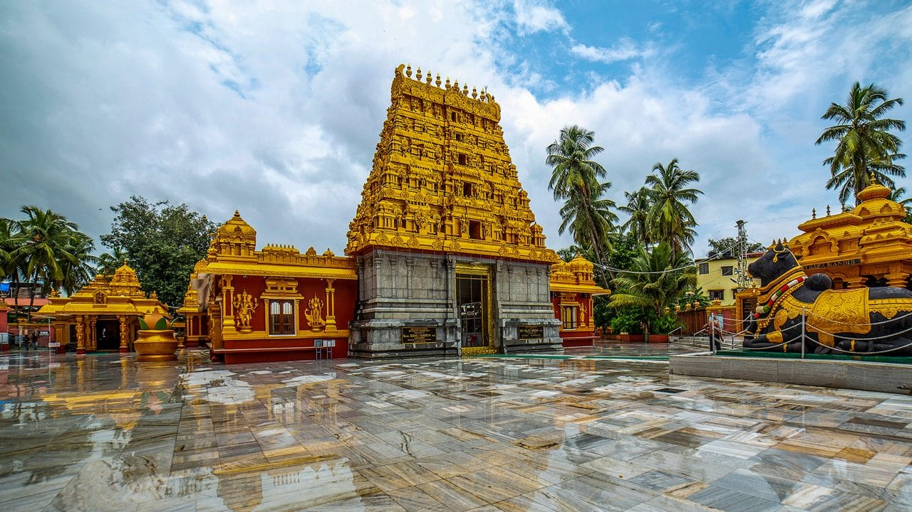

Discover Famous Temples in and Around Mangalore
Coastal Karnataka is home to many important religious destinations, ranging from temples within Mangalore to pilgrimage centres in the Western Ghats. These places attract devotees, families and travellers interested in the region's spiritual traditions, architecture and cultural history.
A temple trip is more enjoyable when it is planned around darshan timings, road conditions, festival crowds and time for rest. Instead of trying to visit every destination in one day, choose a route that suits your group and allows enough time at each stop.
Temples Within Mangalore
1. Kudroli Gokarnath Temple

Kudroli Gokarnath Temple is recognised for its colourful architectural details and festive celebrations. Visitors can include it in a city temple itinerary along with nearby cultural attractions. Check current visiting arrangements, particularly during major festivals.
2. Mangaladevi Temple

Mangaladevi Temple is an important historic shrine associated with Mangaluru's name. Devotees visit to offer prayers, and the temple is particularly significant during religious celebrations. Allow time for worship and follow the customs explained at the site.
3. Kadri Manjunath Temple

Kadri Manjunath Temple is known for its religious importance and historic surroundings. It is a useful stop for visitors interested in Mangalore's heritage. Check the temple's current timings and photography guidelines before visiting.
4. Sharavu Mahaganapathi Temple

Situated in the city, Sharavu Mahaganapathi Temple is a convenient addition to a local temple tour. Its central location makes it possible to combine the visit with other attractions, subject to opening times and traffic.
Pilgrimage Destinations Near Mangalore
5. Dharmasthala Manjunatha Temple

Dharmasthala is one of Karnataka's best-known pilgrimage centres. Visitors travel here to worship at Sri Manjunatha Swamy Temple and experience the town's traditions of hospitality and service. On busy days, darshan queues and traffic may take considerable time, so plan your arrival with a generous buffer.
Check current temple guidance and meal arrangements before departure. If you are planning a same-day return to Mangalore, start early and avoid adding too many other destinations to the schedule.
6. Kukke Subramanya Temple

Kukke Subramanya is a major pilgrimage destination set amid the Western Ghats. Devotees visit throughout the year, including for specific religious observances and rituals. Ask the temple authorities about current requirements for any special ceremony you intend to attend.
The route includes hill-region roads, so consider weather, driving conditions and rest stops. During heavy rain, check local travel advisories before leaving.
7. Sri Krishna Matha, Udupi

Udupi's Sri Krishna Matha is an important spiritual centre known well beyond Karnataka. It can be combined with nearby coastal attractions if time permits. Temple arrangements may differ on festival days, so check before travelling.
8. Mookambika Temple, Kollur

Kollur is home to the revered Mookambika Temple. Its location amid the Western Ghats makes it a destination for both pilgrimage and scenic road travel. Allow sufficient time for the journey and darshan, particularly if starting from Mangalore.
9. Ananthapura Lake Temple

Ananthapura Lake Temple in Kasaragod district is known for its distinctive lakeside setting. It can be considered by travellers exploring the wider coastal region. Confirm visiting rules, access and the time required for the journey before including it in a larger itinerary.
10. Belur and Halebidu Temples

For travellers with an interest in architecture, the Hoysala temples at Belur and Halebidu offer a different kind of heritage experience. Detailed stone carvings and historic temple design make these destinations particularly rewarding for a dedicated cultural trip. Because the journey from Mangalore is longer, consider a multi-day itinerary if you wish to explore at a relaxed pace.
How to Plan a Temple Tour
What to Carry on a Pilgrimage
- Comfortable, modest clothing suitable for temple visits.
- Water, prescribed personal medicines and basic essentials.
- Cash or suitable payment options for local expenses.
- Temple booking details, if applicable.
- A phone with a charged battery and important contact numbers.
Arrange Your Temple Journey from Mangalore
Radhakrishna Taxi Service accepts enquiries for temple travel from Mangalore and trips across Karnataka. Provide the list of temples, travel date, pickup location, passenger count and preferred vehicle when requesting a quotation.
For longer trips, clarify the planned duration, waiting arrangements and additional expenses before confirming. A realistic itinerary is more comfortable than attempting too many destinations in a single day.
Planning a Karnataka Pilgrimage?
Contact Radhakrishna Taxi Service to discuss your temple itinerary, travel date and vehicle requirements.
WhatsApp Enquiry Call +91 81477 71217Frequently Asked Questions
Which temples can I visit within Mangalore?
Kudroli Gokarnath Temple, Mangaladevi Temple, Kadri Manjunath Temple and Sharavu Mahaganapathi Temple are among the city's prominent shrines.
Can I visit Dharmasthala and Kukke Subramanya in one day?
Feasibility depends on departure time, darshan queues, road conditions and the time spent at each temple. Check current conditions and consider a longer trip for a more relaxed visit.
When should I plan a pilgrimage?
Check temple schedules, festival dates, weather and expected crowds before selecting dates. Confirm current darshan arrangements with the relevant temple authorities.
How do I arrange a temple tour taxi?
Contact Radhakrishna Taxi Service at +91 81477 71217 or use the WhatsApp enquiry link.
Temple timings, darshan arrangements, road access and local rules can change. Confirm details with the relevant authorities before travelling.